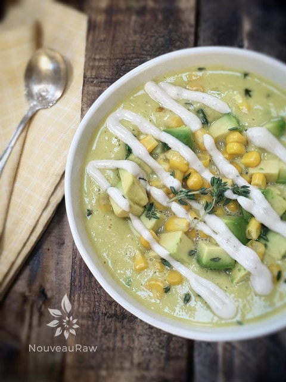

Chilled Sweet Corn & Celery Soup

~ raw, vegan, gluten-free, nut-free ~
This Chilled Sweet Corn and Celery Soup is the ultimate warm-weather dinner that’s as easy to make as it is delicious! The simplicity of this soup shines through as all the ingredients go into the blender and then it’s done. No cooking, no simmering. Nothing.
However, like most soups, it does taste even better the next day when all the ingredients have had time to make friends and come together.
The trick here is using really fresh organic and in-season ingredients. Though, I do realize that fresh corn can escape us within a blink of an eye, feel free to shop the freezer section to find some organic corn.
Also, make sure to use ripe avocado. It can make or break this recipe. Unripe avocados will leave a lingering bitterness, and that isn’t always so pleasant.
Here’s a little trick about salt. The salt is what’s going to do the “cooking” part of this soup. It encourages the vegetables to release all their juices, so they get even sweeter and tastier as it helps to break down the cellular walls.
Serve with a refreshing green leaf salad that compliments this soup by adding a few sprinkles of corn kernels, halved cherry tomatoes, basil, and minced jalapeno (if you like heat).
As I sat down to enjoy a bowl of this soup, I was transported in time, back to when I was around eight years old. My uncle Billy, whom I idolized growing up had a friend who lived across from my grandparents. But there wasn’t a road to separate the two boys; it was a corn field. One that haunted movies are filmed in. hehe
Every once in a while when the two boys decided to get together, I would get to tag along. They would meet each other half way in the corn field. My uncle would lift me up to his shoulders, and we would set out fight our way through the jungle of corn… rows and rows and rows of corn. To find one another, they would whistle to act as a beckon. By the end of our excursion, I would be beaten up from the rough leaves of the cornstalks and covered in mosquito bites… but I didn’t care… I GOT to be with Uncle Billy. (flutters eyelashes). I am about as fond of the taste of this soup as I am of those wonderful memories.
Do take note, that this soup can also be enjoyed warmed up if this recipe finds you on a chillier day. I shared some ideas on how to warm the soup but keep it raw down below. I hope you enjoy this recipe. Many blessings, amie sue
Ingredients:
yields 4 1/2 cups
Soup:
- 2 cups fresh corn, organic
- 2 1/2 cups young Thai coconut water or cream
- 3/4 cup (1/2 large) diced avocado
- 1 small carrot, diced
- 1 stalk celery, chopped
- 1/4 cup diced onion
- 1/2 clove garlic
- 1/4 -1/2 tsp Himalayan pink salt
- 1/4 tsp ground black pepper
- Pinch cayenne
- 2 Tbsp minced fresh parsley
- 1 tsp minced fresh thyme
Garnish:
- Fresh black pepper
- Sweet corn kernels
- Diced avocado
Preparation:
- In the blender combine the; corn, coconut water or cream, diced avocado, carrot, celery, onion, garlic, salt, pepper, and cayenne. Blend until creamy.
- If you can’t get fresh organic corn, I would use organic frozen corn. Allow it to thaw and drain any liquid first if there is any.
- I have made this many times. My favorite is with full-fat coconut milk. It gives the soup a thicker body.
- Add the fresh parsley and thyme, pulse together briefly.
- Cover and set aside at room temperature to mature for 10 – 20 minutes.
- Pour the sweet corn soup into soup bowls, add more corn, diced avocado, and if you are looking to add a little more pizzaz, try this dressing drizzled on top.
- Allow the soup to warm to room temperature and enjoy.
- Place the serving bowl in hot water, allowing it to heat up before adding the soup. This will help take a little extra chill off of the soup and make it cozy warm to hold in your hands.
- Pour a serving size of soup in a mason jar, place lid on top and tighten… immerse the jar in hot water till it warms the soup to your liking.
- Pour into a small saucepan and heat on the stove. Use your finger tip as the temperature gauge; it shouldn’t get too hot for your finger. You can also use a thermometer gauge if this concerns you.
- Dehydrator – if you have a “box” shaped dehydrator such as the Excalibur, pour the soup into a wide mouth baking dish and turn the heat to 145 (F) degrees. Warm for 30-60 minutes. You can also place the temperature at 115 degrees and heat for 3-4 hours. You will need to gauge this. The more soup that exposed to the air, the quicker it will warm.
Culinary Explanations:
- Why do I start the dehydrator at 145 degrees (F)? Click (here) to learn the reason behind this.
- When working with fresh ingredients, it is important to taste test as you build a recipe. Learn why (here).

© AmieSue.com